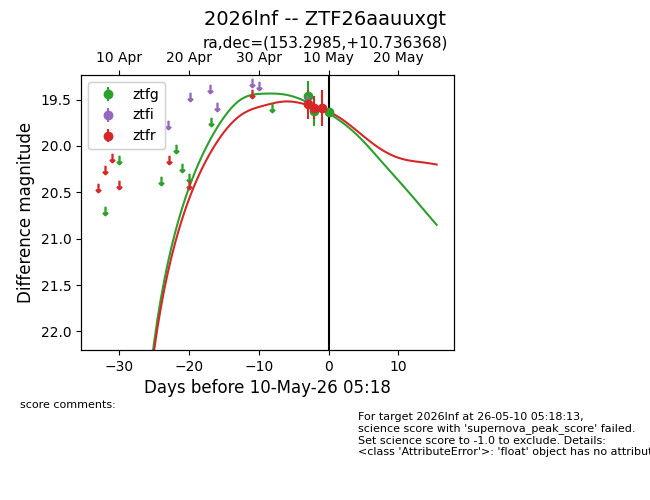
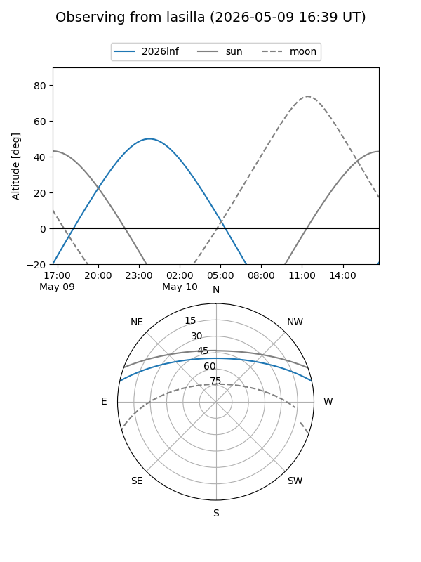
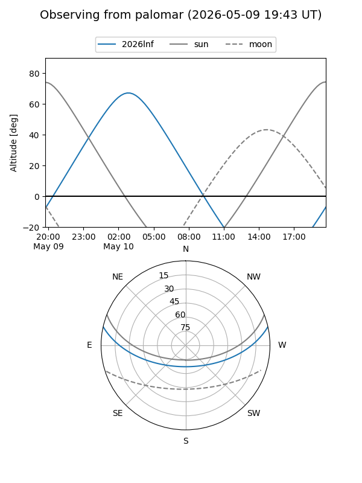
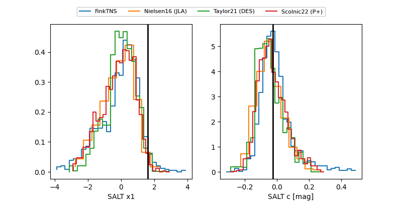

2026lnf
Target 2026lnf at 2026-05-10 05:19
Aliases and brokers:
FINK: link
Lasair: link
ALeRCE: link
TNS: link
YSE: link
alt names
ZTF26aauuxgt (ztf,fink_ztf)
2026lnf (tns,yse)
Coordinates:
equatorial (ra, dec) = 153.2985,+10.73637
equatorial (HMS+DMS) = 10:13:11.65,+10:44:10.92
galactic (l, b) = (228.9454,+49.38216)
Flags:
Photometry:
last ztfg=19.63, ztfr=19.59
3 ztfg, 3 ztfr detections
Lightcurve

Visibility


Additional plots
